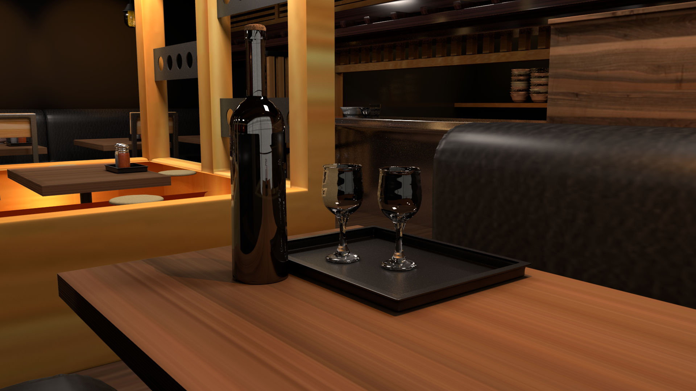
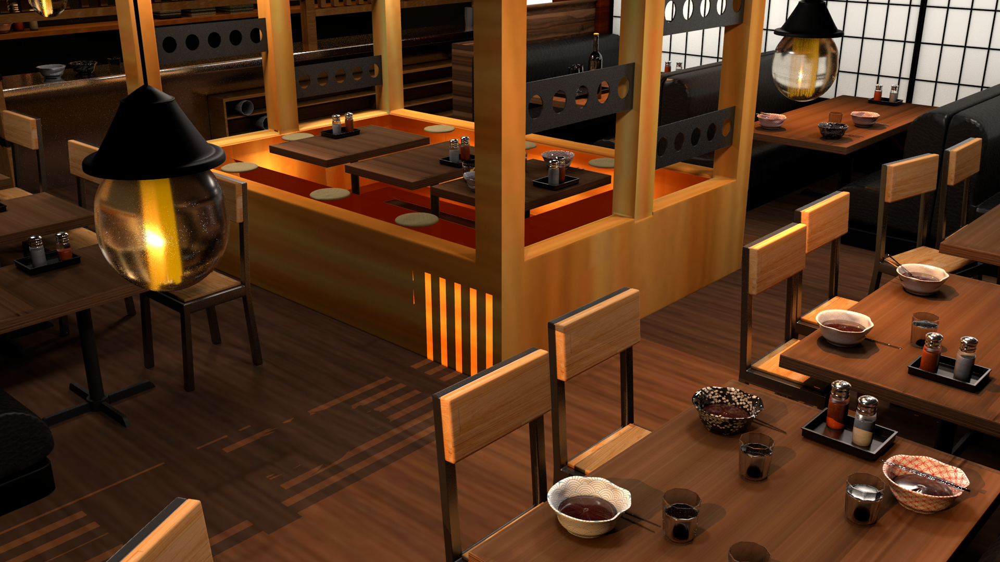
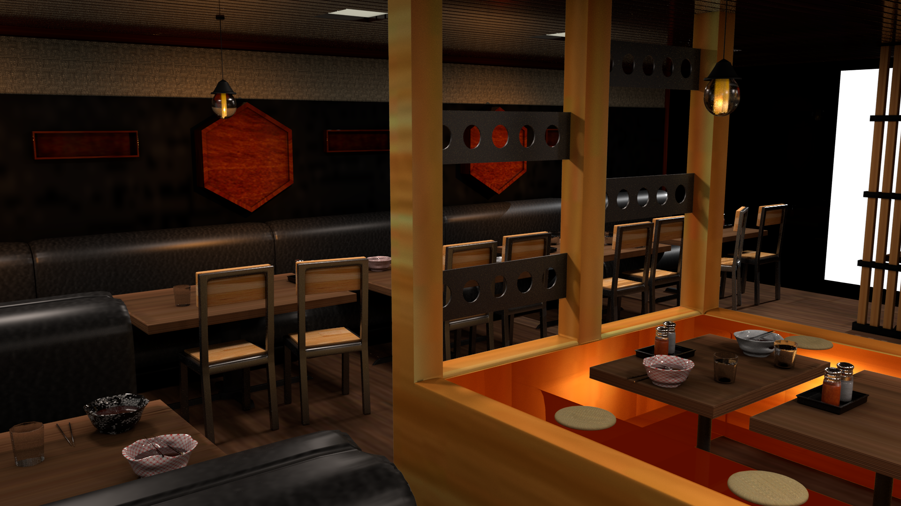
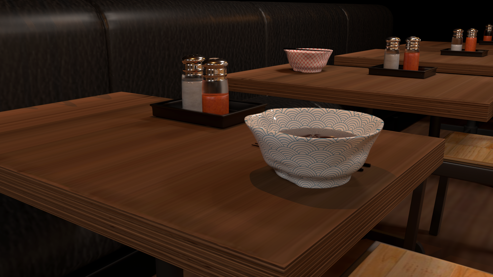

I chose to make a model in Maya based off of my favorite ramen restaurant in San Francisco, CA. Perhaps the most difficult part of the process was creating the lighting in the room. Initially, my lighting made the shots very flat, but with some changes, my shots became much more interesting and gave off a similar atmosphere as the actual restaurant.
   